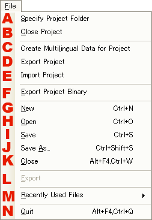

|

|
- プロジェクトフォルダの指定。
プロジェクトフォルダを指定します。
- プロジェクトを閉じる。
開いているプロジェクトを閉じます。
- プロジェクトに他言語データを作成。
プロジェクトをローカライズ作業用に複製します。
- プロジェクトのエクスポート。
プロジェクトを言語毎にエクスポートします。
- プロジェクトのインポート。
プロジェクトを言語毎にインポートします。
- プロジェクトをバイナリ出力。
プロジェクトをアプリに組み込むための説明書のバイナリファイルとして出力します。
- 新規作成。
ページを新規作成します。
- 開く。
ファイルからページを開きます。
※プロジェクト外のページファイルは閲覧専用で開かれます。
- 保存。
ページを保存します。
- 別名で保存。
別の名前で保存します。
- 閉じる。
アクティブになっているページを閉じます。
- 使用できません。
編集中のページをhtmlに変換し任意のフォルダに出力します。
※ページファイルのみで画像ファイルは出力されません。
- 最近使ったファイル。
最近使ったファイルを表示します。
- 終了。
エディタを終了します。
|